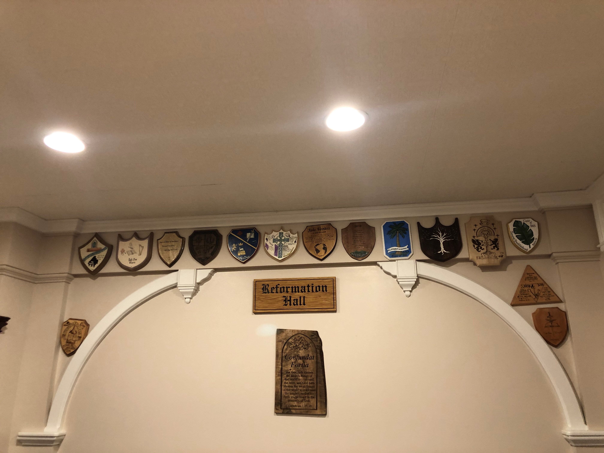

We believe God saves every person with the intention that each one will glorify Christ by living a life that demonstrates the attributes of God.
Learning to live like Christ is a process. This process includes learning what God desires, then building into the life actions and habits that radiate the qualities of Christ. The premiere character quality is love. Love is the essence of all the commandments. Love for God means that we do not love or imitate the world’s music, fashions, or methods. We try to attract people to Christ by acting like Christ — not by acting like the world.
The church is designed to train the saints to do the work of the ministry, including evangelism. I Corinthians 5:20; James 2:22; I John 2:15-15; I John 4:4-5
Church Schedule
Three days: Friday, Saturday, Sunday
Friday: 5:00 -8:00 p.m.
Saturday: 9:00-12:00; 1:00-4:00;
Sunday: 10:45-12:00 Worship Service
1:00- 2:00 Afternoon session